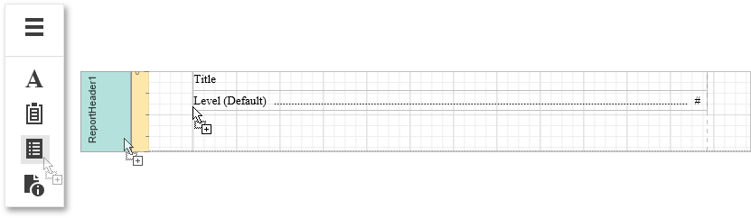
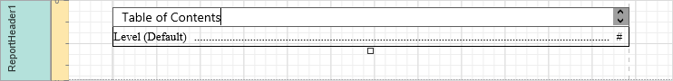
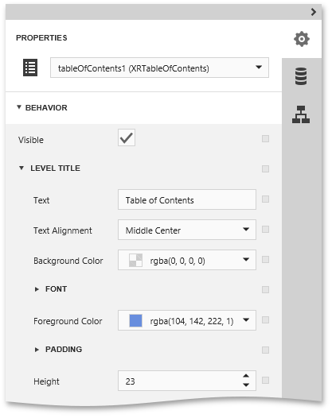
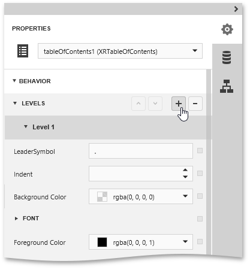
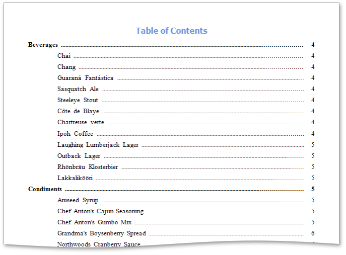

Create a Table of Contents
This topic describes how to provide a report with a table of contents that displays page numbers for bookmarked report elements at different nesting levels, and thus makes it possible to quickly navigate to a specific document page by clicking the corresponding entry.
To demonstrate this feature, use a report with specified bookmarks similar to the one created in the following tutorial: Create a Document Map with Bookmarks.
To create a table of contents in a report, do the following.
Drop the Table of Contents control from the Toolbox onto the Report Header Band. If the report does not contain this band, it will be created automatically.

Double-click the title of the table of contents and specify its text.

To customize title appearance, switch to the Properties Panel, expand the Behavior category and use the Level Title option's settings.

To customize the appearance of all other levels, use the Level Default option's settings in the Behavior category.

To customize a specific level individually, add a corresponding item to the Levels collection of the table of contents. After adding a new level, you can access and customize its properties.

The table of contents is now ready. Switch your report to the Preview mode and view the result.
